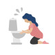

NV in Pregnancy
Rx:
1. Tab Vit B6 N=20 daily
Or Tab Pyridoxine N=20 daily
2. Cap Zintoma N=20 qd
توصیههای لازم شامل:
غذای کم حجم با دفعات بالا / پرهیز از بوی عطر و ادکلن و..
در صورت عدم بهبودی :
Tab Promethazine 25mg N=20 q6h
Or Amp Metoclopramide 5mg N=1 IM
Or Amp Promethazine 25mg N=1 IM
1️⃣ بیماری های زنان و زایمان
✔️ تورشن تخمدان
✔️ کبد چرب حاملگی
✔️ پره اکلامپسی
2️⃣ بیماری های داخلی
✔️ پانکراتیت حاد
✔️ DKA
✔️ ازوفاژیت
✔️ GERD
✔️ PUD
✔️ تیروتوکسیکوز و هایپرتیروئیدیسم
✔️ هایپر پاراتیروئیدیسم
✔️IBS
✔️ گاسترو انتریت
✔️ هپاتیت
3️⃣ بیماری های جراحی
✔️ آپاندیسیت
✔️ سنگ کلیه
✔️ سنگ کیسه صفرا
✔️ ایلئوس پارالایتیک
✔️ انسداد روده
4️⃣ بیماری های نورولوژیک
✔️ گاستروپارزی
✔️ میگرن
✔️ Pseudotumor cerebri
✔️ تومور CNS
5️⃣ مشکلات سایکولوژیک
6️⃣ مسمومیت دارویی
تصویری برای این نسخه موجود نیست.